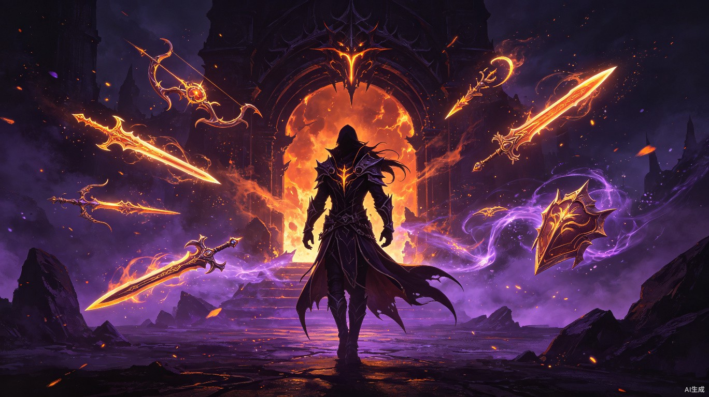

0 项目概述
项目背景
本项目旨在将原PC版 "我的暗黑与魔兽第五赛季" 的全部20+子系统完整复刻为H5单页面放置挂机ARPG游戏。游戏融合暗黑破坏神与魔兽世界的经典元素，以现代暗黑风格UI呈现。项目定位为完全公益，无任何付费点和VIP系统，支持移动端与PC端浏览器运行，既可部署在 Web 服务器上在线访问，也可本地双击 HTML 文件直接运行。
核心定位
自动战斗、离线收益，碎片化时间即可获得成长，核心循环为"推层数 → 获取装备 → 强化角色 → 推更高层数"。
7大职业、技能树、装备词缀、套装搭配、宝石镶嵌等深度养成系统，满足硬核ARPG玩家需求。
融合暗黑破坏神（职业/装备/秘境）与魔兽世界（副本/巨龙/英雄），双IP碰撞带来独特体验。
核心玩法循环
系统架构总览
T 技术架构
技术选型
| 维度 | 选型 | 说明 |
|---|---|---|
| 运行平台 | H5 单页面 | 纯前端，无需后端服务器；可部署Web服务器或本地双击HTML直接运行 |
| 数据持久化 | localStorage / IndexedDB | localStorage为主（JSON序列化），IndexedDB作为扩展存储；支持存档导出/导入JSON文件 |
| UI框架 | 原生HTML/CSS/JS | 不依赖React/Vue等框架 |
| 样式方案 | CSS3 + CSS变量 | 暗色主题，响应式布局 |
| 图表/流程 | Mermaid.js | 内嵌流程图展示 |
| 动画特效 | CSS3 Animation/Transition | 适度动画，不引入额外库 |
数据存储结构
{
"idle_rpg_save": {
"version": "1.0.0",
"timestamp": 1751606400000,
"player": { ... },
"equipment": { ... },
"inventory": { ... },
"storage": { ... },
"combat": { ... },
"pets": [ ... ],
"followers": [ ... ],
"gems": { ... },
"kanai": { ... },
"divinity": { ... },
"horadrim": { ... },
"heaven": { ... },
"abyss": { ... },
"dragons": { ... },
"codex": { ... },
"calendar": { ... },
"achievements": { ... },
"settings": { ... }
}
}
// 存档导出/导入
// 导出: JSON.stringify(saveData) → 下载为 .json 文件
// 导入: 用户选择 .json 文件 → JSON.parse → 写入 localStorage
// 也支持 IndexedDB 存储大容量存档（仓库/历史记录等）性能约束与策略
- localStorage 存储核心游戏数据（角色/装备/资源等）
- IndexedDB 存储仓库/战斗日志等大容量数据
- 装备数据使用模板引用 + 差异存储
- 支持存档导出为JSON文件 / 从JSON文件导入恢复
- 多存档槽位可选（最多3个）
- 战斗场景使用CSS动画而非Canvas
- 虚拟列表渲染仓库700格装备
- 离线收益计算限制迭代次数
- 按需加载子系统面板
R 资源系统
资源一览
| 资源名称 | 类型 | 获取方式 | 用途 | 每日上限 |
|---|---|---|---|---|
| 金币 | 基础货币 | 战斗掉落、贪婪秘境 | 强化、升级、重铸 | 无限制 |
| 遗忘之魂 | 锻造材料 | 分解蓝+装备 | 重铸、锻造 | 无限制 |
| 太古精魂 | 锻造材料 | 分解远古+装备 | 重铸、装备强化1-10星 | 无限制 |
| 死亡之息 | 锻造材料 | 分解黄+装备 | 宝石打造 | 无限制 |
| 森林魔种 | 区域材料 | 庇护之地掉落 | 重铸 | 无限制 |
| 荒漠圣泉 | 区域材料 | 天堂秘境掉落 | 重铸 | 无限制 |
| 极地寒冰 | 区域材料 | 地狱秘境掉落 | 重铸 | 无限制 |
| 圣石 | 高级资源 | 高阶天堂掉落 | 天堂神兵升级 | 有上限 |
| 魂石 | 高级资源 | 地狱深渊掉落 | 灵魂升级 | 有上限 |
| 时光币 | 抽卡货币 | 每日签到、战斗 | 宠物抽卡、重铸 | 500/日 |
| 钻石 | 高级货币 | 成就奖励、高层数通关、手册收集里程碑 | 武器开孔、灵魂解锁、强化高级阶段 | 无每日上限，获取稀少 |
1 核心角色系统
系统概述
角色系统是游戏的核心基础，包含7大职业选择、技能树配置、属性计算和等级成长。玩家首次进入游戏时选择职业，后续可在一定条件下转职。
职业列表
| 职业 | 主属性 | 定位 | 特色 |
|---|---|---|---|
| 猎魔人 | 敏捷 | 远程物理 | 高攻速、多重箭、陷阱 |
| 魔法法师 | 智力 | 远程法术 | 元素精通、传送、护盾 |
| 野蛮人 | 力量 | 近战物理 | 高生命、旋风斩、怒气 |
| 巫医 | 智力 | 召唤/持续 | 召唤物、诅咒、灵魂收割 |
| 圣教军 | 力量 | 坦克/近战 | 护盾、审判、天堂之光 |
| 死灵法师 | 智力 | 召唤/亡灵 | 骷髅军团、尸爆、骨矛 |
| 武僧 | 敏捷 | 近战/混合 | 连击、七相拳、内力 |
技能树结构
每个职业拥有独立技能树，包含6个主动技能和4个被动技能。
数据结构
{
"player": {
"name": "暗影猎手",
"class": "demonhunter", // 职业ID
"level": 100, // 基础等级（上限100）
"paragonLevel": 2580, // 巅峰等级（无上限）
"paragonPoints": { // 巅峰点数分配
"core": 850, // 核心属性
"offense": 650, // 攻击属性
"defense": 580, // 防御属性
"utility": 500 // 辅助属性
},
"attributes": {
"primary": 12580, // 主属性（根据职业对应）
"secondary": 3200, // 副属性
"damage": 985600, // 伤害
"toughness": 45200000, // 坚韧
"recovery": 1250000, // 恢复
"attackSpeed": 1.85, // 攻速
"critChance": 0.65, // 暴击率
"critDamage": 5.50, // 暴击伤害
"cooldownReduction": 0.42 // 冷却缩减
},
"skills": {
"active": ["cluster_arrow", "multishot", "vault", "rain_of_vengeance", "marked_for_death", "vengeance"],
"passive": ["ballistics", "custom_engineering", "ambush", "steady_aim"]
}
}
}等级与巅峰系统
- 通过战斗经验升级
- 每级解锁新技能或被动
- 每10级大幅属性提升
- 满级后经验转化为巅峰经验
- 满级后继续获取经验
- 每级获得4个巅峰点数
- 分配到4个类目（核心/攻击/防御/辅助）
- 每级提供固定战斗等级加成
UI原型
| 主属性(敏捷) | 12,580 |
| 伤害 | 985,600 |
| 坚韧 | 45,200,000 |
| 恢复 | 1,250,000 |
| 攻速 | 1.85 |
| 暴击率 | 65.0% |
| 暴击伤害 | 550% |
| 冷却缩减 | 42.0% |
边界条件
- 职业一经选定不可更改（考虑后续加入转职功能）
- 巅峰等级无上限，数值注意防溢出（使用BigInt或科学计数法显示）
- 技能切换不消耗资源，随时可配置
- 属性计算需考虑所有子系统加成的叠加
2 战斗与秘境系统
系统概述
战斗系统是游戏的核心玩法，采用自动挂机战斗模式。玩家选择地图和难度层数后，角色自动与怪物战斗，计时通关获取经验和装备掉落。推层数是游戏的核心追求。
地图类型
| 地图 | 难度范围 | 特殊产出 | 关联材料 |
|---|---|---|---|
| 庇护之地 | 层数1-500 | 基础装备/材料 | 森林魔种 |
| 天堂大秘境 | 层数1-500 | 高级装备/材料 | 荒漠圣泉 |
| 地狱大秘境 | 层数1-500 | 顶级装备/材料 | 极地寒冰 |
战斗流程
体力系统
- 最大体力值: 9999
- 每次战斗消耗体力（与层数相关）
- 体力每日自动回复至满
- 体力耗尽时战斗自动停止
- 体力可通过每日登录奖励额外恢复
- 勾选"自动换图"后，当前地图推到满层
- 自动切换到下一个地图继续
- 所有地图满层后回到庇护之地
- 换图时不中断战斗状态
难度层数机制
- 每层怪物血量和伤害按固定倍率递增
- 层数越高，掉落品质概率越高
- 存在"推不动"的层数时，系统自动降低层数
- 历史最高层数记录，提供成就感
数据结构
{
"combat": {
"isFighting": true,
"currentMap": "sanctuary", // sanctuary/heaven/hell
"currentLayer": 285,
"maxLayer": { // 各地图历史最高层
"sanctuary": 500,
"heaven": 432,
"hell": 285
},
"stamina": {
"current": 5499,
"max": 9999
},
"autoSwitchMap": true,
"killCount": 1584320,
"totalPlayTime": 864000 // 秒
}
}UI原型
3 装备系统
系统概述
装备系统是角色成长的核心途径，涵盖13个装备槽位、6个品质等级、词缀属性系统和Kanai立方体。玩家通过战斗掉落获取装备，通过品质提升和套装收集增强战力。
装备槽位
品质等级
| 品质 | 颜色 | 词缀数量 | 掉落概率 | 说明 |
|---|---|---|---|---|
| 白色（普通） | 灰白 | 1-2 | 40% | 基础属性 |
| 蓝色（魔法） | 蓝色 | 2-3 | 30% | 附带1个魔法词缀 |
| 黄色（稀有） | 金色 | 3-4 | 18% | 附带稀有词缀 |
| 绿色（套装） | 绿色 | 4-5 | 7% | 套装组件，凑齐有套装效果 |
| 橙色（传奇） | 橙色 | 4-5 | 4% | 独立传奇特效 |
| 红色（远古/太古） | 红色 | 5-6 | 1% | 远古/太古品质，可附魔 |
Kanai 立方体
提取传奇武器的特效词缀，无需穿戴即可生效。
提取传奇护甲的特效词缀，获得被动加成。
提取传奇首饰的特效词缀，提升属性。
套装系统（以猎魔人为例）
| 套装名称 | 件数 | 2件效果 | 4件效果 | 6件效果 |
|---|---|---|---|---|
| 邪秽之精 | 6 | 暴击率+10% | 暗影飞刀伤害+300% | 暗影飞刀爆炸范围翻倍 |
| 暗影装束 | 6 | 陷阱伤害+100% | 多重射击产生暗影分身 | 暗影分身继承100%伤害 |
| 恐惧之地机甲 | 4 | 全属性+1000 | 机甲模式伤害+400% | - |
| 娜塔亚的复仇 | 6 | 攻速+15% | 攻速每击+2%，叠10层 | 满叠暴击伤害+150% |
| 掠夺者的化身 | 6 | disciplines+4 | 烟幕无冷却 | 烟幕期间伤害+300% |
数据结构
{
"equipment": {
"equipped": {
"head": { "id": "eq_001", "name": "暗影面罩", "quality": "ancient", ... },
"shoulders": { "id": "eq_002", "name": "邪秽肩铠", "quality": "set", ... },
"amulet": { "id": "eq_003", "name": "命运之链", "quality": "legendary", ... },
"chest": { "id": "eq_004", "name": "邪秽胸甲", "quality": "set", ... },
"hands": { "id": "eq_005", "name": "铁手套", "quality": "rare", ... },
"wrists": { "id": "eq_006", "name": "复仇护腕", "quality": "legendary", ... },
"waist": { "id": "eq_007", "name": "命运腰带", "quality": "set", ... },
"ring1": { "id": "eq_008", "name": "乔丹之石", "quality": "legendary", ... },
"ring2": { "id": "eq_009", "name": "全能王戒", "quality": "legendary", ... },
"legs": { "id": "eq_010", "name": "邪秽腿甲", "quality": "set", ... },
"feet": { "id": "eq_011", "name": "暗影长靴", "quality": "ancient", ... },
"weapon": { "id": "eq_012", "name": "风之力", "quality": "legendary", ... },
"offhand": { "id": "eq_013", "name": "猩红钉刺", "quality": "set", ... }
},
"kanai": {
"weapon": { "legendaryId": "locust_swarm", "powerName": "蝗虫瘟疫" },
"armor": { "legendaryId": "monkey_king", "powerName": "猴王战甲" },
"jewelry": { "legendaryId": "obsidian_ring", "powerName": "黑曜石之戒" }
}
}
}装备属性计算公式
最终伤害 = 主属性 x 武器DPH x 攻速 x (1 + 暴击率 x 暴击伤害) x 技能倍率 x 套装加成 x 增伤%
最终坚韧 = (生命值 + 护甲减伤% + 全抗减伤%) x (1 - 伤害减免%) x 追随者加成
4 仓库系统
系统概述
仓库系统提供装备和物品的存储管理功能，包含7页仓库（每页70格）共490格空间，支持背包与仓库合并显示、分类筛选和批量操作。
功能描述
- 背包: 30格（随身携带）
- 仓库: 7页 x 70格 = 490格
- 总计: 520格存储空间
- 可通过扩展增加页数
- 一键整理: 按品质/类型自动排列
- 一键分解: 批量分解选中品质以下装备
- 时装分解: 专门分解时装类物品
- 多选模式: 勾选后批量处理
UI原型
肩铠
力
护腕
胸甲
头盔
剑
戒指
腰带
之石
腿甲
靴子
项链
过滤设置
仓库和背包共用过滤规则，可按以下维度筛选：
- 品质过滤: 白/蓝/黄/绿/橙/红 的显示/隐藏
- 类型过滤: 武器/护甲/首饰/套装 的分类
- 等级过滤: 仅显示指定等级以上
- 职业过滤: 仅显示当前职业可用
- 锁定保护: 锁定的装备不参与一键分解
数据结构
{
"inventory": {
"slots": [null, {...}, {...}, null, ...], // 30格背包
"filter": {
"minQuality": "magic", // 最低显示品质
"types": ["weapon","armor","jewelry"],
"showLocked": true
}
},
"storage": {
"pages": [
{ "slots": [null, {...}, ...] }, // 第1页 70格
{ "slots": [...] }, // 第2页
// ...共7页
],
"currentPage": 0
}
}5 锻炉重铸系统
系统概述
锻炉重铸允许玩家消耗多种材料对已穿戴装备进行属性重新随机，是提升装备品质的重要手段。每日有免费次数限制，次数可通过游戏内成就增加。
重铸规则
| 项目 | 说明 |
|---|---|
| 目标 | 选择已装备的某个槽位进行重铸 |
| 材料消耗 | 时光币 + 遗忘之魂 + 太古精魂 + 区域材料 |
| 免费次数 | 每日1次免费重铸，通过成就/手册收集可增加至每日3次 |
| 额外次数 | 消耗钻石（游戏内稀有资源）额外重铸，无次数上限 |
| 重铸结果 | 随机重新生成该装备的副属性词缀 |
| 保底机制 | 连续5次未提升品质，第6次必出更高品质 |
材料消耗公式
重铸费用 = 基础时光币(50) + 遗忘之魂(装备品质x10) + 太古精魂(品质x5)
区域材料消耗 = 对应地图材料 x (装备等级/10)
钻石重铸 = 50钻石/次UI原型
状态转换
6 宝石工坊系统
系统概述
宝石工坊提供宝石的打造、升级和镶嵌管理。包含5种基础宝石、多彩宝石和8种传奇宝石，装备最多3个宝石孔。
宝石分类
| 类型 | 颜色 | 数量 | 获取方式 | 升级方式 |
|---|---|---|---|---|
| 基础宝石 | 绿/红/黄/紫/蓝 | 5种 | 战斗掉落 | 3合1升级，费用递增 |
| 多彩宝石 | 彩虹 | 1种 | 5种基础宝石合成 | 同上 |
| 传奇宝石 | 特殊 | 8种 | 贪婪秘境/成就 | 单独升级，费用指数增长 |
传奇宝石列表
| 名称 | 特效 | 最大等级 |
|---|---|---|
| 困者之灾 | 对受控敌人伤害+30%（每级+0.5%） | 150 |
| 无限之深 | 暴击伤害+150%（每级+2%） | 150 |
| 贼神之祸 | 精英怪伤害+40%（每级+1%） | 150 |
| 强者之灾 | 无伤害加成时额外增伤25% | 150 |
| 守护之灾 | 未命中时护甲+25% | 150 |
| 转生之石 | 死亡后10秒无敌 | 150 |
| 毁灭之石 | 攻击有概率造成3倍伤害 | 150 |
| 末日之石 | 技能冷却加快20% | 150 |
宝石打造流程
UI原型
7 附魔系统
系统概述
附魔系统允许玩家对远古品质以上的装备进行一次性的属性增强。附魔后装备获得额外属性词缀，同时可消耗钻石（游戏内稀有资源）为武器额外开孔。
附魔规则
| 规则项 | 详细说明 |
|---|---|
| 品质要求 | 仅远古+品质装备可附魔 |
| 次数限制 | 每件装备仅可附魔1次 |
| 附魔效果 | 替换一个随机副属性为新词缀 |
| 武器开孔 | 消耗钻石（游戏内稀有资源）为武器额外开1个宝石孔 |
| 不可逆操作 | 附魔后不可撤销 |
附魔流程
8 宠物系统
系统概述
宠物系统通过抽卡获取宠物角色，宠物提供战斗等级和属性加成。分为赛季守护者（WoW巨龙）和时空旅者（WoW英雄角色）两大类。
宠物分类
- 死亡之翼 - 毁灭之王
- 阿莱克丝塔萨 - 生命的缚誓者
- 诺兹多姆 - 永恒之王
- 伊瑟拉 - 梦境女王
- 玛里苟斯 - 魔法之王
- 萨尔 - 大酋长
- 希尔瓦娜斯 - 黑暗游侠
- 阿尔萨斯 - 巫妖王
- 伊利丹 - 背叛者
- 吉安娜 - 远行者
抽卡机制
| 抽卡方式 | 消耗 | 保底 | 说明 |
|---|---|---|---|
| 时光币抽 | 5时光币/次 | 50抽保底SSR | 每日500上限限制次数 |
| 十连抽 | 50时光币 | 同上 | 至少1个蓝色+品质 |
| 钻石抽 | 50钻石/次 | 30抽保底SSR | 钻石通过成就/高层数/手册里程碑获取 |
宠物养成
4个出战位
玩家最多设置4个宠物同时出战，出战宠物的属性加成全部叠加。未出战宠物不提供加成。
数据结构
{
"pets": [
{
"id": "pet_deathwing",
"name": "死亡之翼",
"type": "dragon", // dragon 或 hero
"star": 10,
"maxStar": 60,
"level": 10,
"isActive": true, // 是否出战
"slot": 0, // 出战位(0-3)
"bonus": {
"combatLevel": 200,
"primaryAttr": 5000,
"damageBonus": 0.15
}
}
],
"activeSlots": [0, 1, 2, 3]
}9 巨龙之魂系统
系统概述
巨龙之魂系统是围绕5条巨龙军团的声望养成系统，通过消耗巨龙之魂道具提升声望等级，解锁每日资源上限加成。
声望系统
| 巨龙军团 | 声望等级 | 奖励效果 | 每日加成 |
|---|---|---|---|
| 红龙军团 | 冷淡→中立→友好→尊敬→崇敬→崇拜 | 体力上限+500 | 体力恢复+10% |
| 蓝龙军团 | 冷淡→中立→友好→尊敬→崇敬→崇拜 | 宝石升级费用-5% | 经验加成+15% |
| 绿龙军团 | 冷淡→中立→友好→尊敬→崇敬→崇拜 | 生命恢复+10% | 材料掉落+10% |
| 青铜龙军团 | 冷淡→中立→友好→尊敬→崇敬→崇拜 | 离线收益+20% | 时光币上限+100 |
| 黑龙军团 | 冷淡→中立→友好→尊敬→崇敬→崇拜 | 伤害加成+8% | 圣石掉落上限+5 |
巨龙之魂道具
- 通过高阶秘境战斗掉落
- 不同颜色的巨龙之魂对应不同军团
- 使用后增加对应军团声望经验
- 声望升级需消耗递增数量的巨龙之魂
10 WOW副本系统
系统概述
WOW副本系统是魔兽世界主题的专属PVE内容，包含9个经典团队副本，产出独立掉落池的紫色史诗装备。
副本列表
| 副本 | 主题 | 难度 | 产出 |
|---|---|---|---|
| 熔火之心 | MC | 入门 | 紫色装备 / 火焰材料 |
| 黑翼之巢 | BWL | 初级 | 紫色装备 / 黑龙之鳞 |
| 纳克萨玛斯 | NAXX | 中级 | 紫色装备 / 亡灵材料 |
| 黑暗神庙 | BT | 中高级 | 紫色装备 / 暗影材料 |
| 太阳井高地 | SWP | 高级 | 紫色装备 / 奥术材料 |
| 奥杜尔 | Ulduar | 高难度 | 紫色装备 / 泰坦材料 |
| 冰冠堡垒 | ICC | 极高 | 紫色装备 / 冰霜材料 |
| 火焰之地 | FL | 史诗 | 紫色装备 / 烈焰材料 |
| 巨龙之魂 | DS | 传说 | 紫色装备 / 龙魂碎片 |
副本机制
- 每个副本有独立的Boss关卡
- 每日副本次数有限（通常3次）
- 产出WoW主题紫色史诗装备
- 掉落池与普通秘境完全独立
- 副本难度随玩家等级动态调整
UI原型
11 贪婪秘境系统
系统概述
贪婪秘境是哥布林宝箱主题的特殊玩法，玩家使用"机械指环"开启宝箱获取经验、金币和宝石奖励。宝箱等级和倍率系统提供长期成长目标。
指环类型
| 指环类型 | 品质 | 宝箱经验 | 获取方式 |
|---|---|---|---|
| 普通机械指环 | 白色 | 1x 经验 | 日常产出 |
| 远古机械指环 | 橙色 | 3x 经验 | 中高层数掉落 |
| 太古机械指环 | 红色 | 10x 经验 | 高层数掉落 |
倍率系统
- 宝箱等级通过使用指环积累经验提升
- 宝箱等级越高，金币和宝石奖励越多
- 倍率范围: 1.0x → 3.0x
- 每升10级倍率+0.2x
- 每日可使用指环数量无上限（但受指环库存限制）
UI原型
x23
x5
x1
12 神力系统
系统概述
神力系统是6条不同路线的装备收集系统，每条路线13件装备，凑齐不同数量给予递增的增伤加成。类似暗黑3的萃取系统但更加丰富。
神力路线
| 路线 | 装备数 | 2件加成 | 6件加成 | 13件加成 |
|---|---|---|---|---|
| 英勇 | 13 | 伤害+5% | 伤害+20% | 伤害+50% |
| 正义 | 13 | 暴击率+3% | 暴击率+10% | 暴击率+25% |
| 希望 | 13 | 生命+10% | 生命+35% | 生命+80% |
| 命运 | 13 | 全属性+5% | 全属性+15% | 全属性+40% |
| 智慧 | 13 | 经验+10% | 经验+30% | 经验+80% |
| 隐藏 | 13 | 神秘加成 | 神秘加成 | 神秘加成 |
增伤叠加
6条路线的增伤百分比以乘法叠加计算，最终总增伤为所有路线增伤的乘积。
示例: 英勇50% x 正义25% x 希望80% x 命运40% x 智慧80% x 隐藏X% = 总增伤乘数
13 太古宝箱（成就奖励）
系统概述
太古宝箱是游戏内成就系统的奖励领取界面，玩家通过达成各类游戏里程碑（推层数、收集进度、通关速度等）获得成就点数，根据累计成就点数领取对应品质的太古装备奖励。完全公益，无任何付费门槛。
成就等级与奖励
| 成就等级 | 名称 | 所需成就点 | 奖励内容 |
|---|---|---|---|
| 新手冒险者 | 银牌成就 | 100点 | 蓝色品质装备x1 |
| 精英猎手 | 金牌成就 | 500点 | 黄色品质装备x1 |
| 秘境征服者 | 超凡成就 | 2000点 | 远古品质装备x1 |
| 传奇勇士 | 至尊成就 | 5000点 | 太古品质装备x1 |
| 永恒英雄 | 传说成就 | 10000点 | 太古品质装备x1 + 钻石x100 |
成就点获取方式
| 成就类别 | 示例 | 点数 |
|---|---|---|
| 推层数里程碑 | 首次通关100/500/1000/2000层 | 50~500点 |
| 装备收集 | 集齐某套装全部6件 | 200点 |
| 手册收集 | 任一分类达到60/60 | 300点 |
| 通关速度 | 某层数通关时间低于阈值 | 100~300点 |
| 宠物收集 | 收集全部巨龙守护者 | 500点 |
| 连续登录 | 连续登录7/30/60/100天 | 50~300点 |
领取规则
- 每个成就等级奖励仅可领取一次
- 领取后装备直接进入背包
- 成就点数累计，不会减少
- 钻石奖励直接发放到资源栏
14 追随者系统
系统概述
追随者系统提供3个独立NPC伙伴（圣骑士、盗贼、女巫），各自拥有等级、装备栏位和技能，为玩家角色提供战斗等级和属性加成。
追随者列表
| 追随者 | 定位 | 装备栏位 | 解锁条件 |
|---|---|---|---|
| 圣骑士 | 坦克/治疗 | 项链 + 武器 + 副手 | 等级10 |
| 盗贼 | 近战DPS | 项链 + 武器 + 副手 | 等级20 |
| 女巫 | 远程法术 | 项链 + 武器 + 副手 | 等级30 |
经验与等级机制
- 追随者拥有独立经验池，每日更新
- 经验池大小与秘境层数挂钩（层数越高，经验越多）
- 每30/50/70/90级解锁战斗等级+10
- 满级为100级，提供总计+40战斗等级
- 追随者装备可独立穿戴和更换
UI原型
15 赫拉迪姆议会
系统概述
赫拉迪姆议会包含9个可升级NPC角色，各自消耗不同材料升级，提供总战斗等级加成。部分NPC有每日升级上限。
NPC列表
| NPC | 消耗材料 | 升级上限 | 战斗等级加成 |
|---|---|---|---|
| 塔拉夏 | 遗忘之魂 + 金币 | 每日10次 | 每级+2 |
| 杰瑞德·凯恩 | 太古精魂 + 金币 | 每日5次 | 每级+3 |
| 迪卡·凯恩 | 时光币 | 无限制 | 每级+1 |
| 佐敦库勒 | 钻石 | 每日3次 | 每级+5 |
| 莉亚 | 死亡之息 + 金币 | 每日8次 | 每级+2 |
| 泰瑞尔 | 圣石 + 金币 | 每日2次 | 每级+4 |
| 玛瑟尔 | 魂石 + 金币 | 每日2次 | 每级+4 |
| 奥达尔 | 区域材料 + 金币 | 每日10次 | 每级+1 |
| 伊纳瑞斯 | 多种材料 | 每日1次 | 每级+6 |
升级机制
16 高阶天堂系统
系统概述
高阶天堂系统是游戏的高级养成内容，包含天堂祝福、天堂庇护和天堂神兵三大子模块。需要穿戴13件远古装备才能激活全部功能。
三大子模块
- 需穿戴13件远古装备
- 激活后全属性+25%
- 离线收益额外+50%
- 缺失装备降低效果
- 减伤百分比加成
- 基础减伤10%
- 每件远古装备+2%
- 满13件最高36%
- 5件神圣武器
- 碧蓝怒火等
- 消耗圣石+钻石（游戏内稀有资源）升级
- 每日圣石掉落有上限
天堂神兵列表
| 神兵 | 基础效果 | 每级提升 | 最大等级 |
|---|---|---|---|
| 碧蓝怒火 | 伤害+10% | +0.5% | 100 |
| 天堂之怒 | 暴击率+5% | +0.3% | 100 |
| 圣光之锤 | 攻速+8% | +0.4% | 100 |
| 正义之剑 | 全属性+500 | +50 | 100 |
| 裁决之盾 | 减伤+3% | +0.2% | 100 |
17 地狱深渊系统
系统概述
地狱深渊系统是高阶天堂的对立面，包含7个灵魂升级路线（4个初始可用 + 3个里程碑解锁），提供增伤和特殊效果。
灵魂路线
| 灵魂 | 类型 | 解锁方式 | 效果 |
|---|---|---|---|
| 痛楚 | 免费 | 初始解锁 | 伤害+15%（满级） |
| 罪恶 | 免费 | 初始解锁 | 暴击伤害+20%（满级） |
| 谎言 | 免费 | 初始解锁 | 攻速+12%（满级） |
| 苦难 | 免费 | 初始解锁 | 生命+25%（满级） |
| 憎恨 | 里程碑解锁 | 通关1000层后解锁，消耗100钻石 | 精英伤害+30% |
| 恐惧 | 里程碑解锁 | 通关2000层后解锁，消耗200钻石 | 减伤+15% |
| 毁灭 | 里程碑解锁 | 通关3000层后解锁，消耗500钻石 | 全属性+10% |
升级材料
- 魂石: 通过战斗掉落，每日有上限
- 升级费用随等级指数增长
- 每个灵魂最高等级100级
- 所有灵魂等级累计提供战斗等级加成
18 装备强化系统
系统概述
装备强化系统允许对14个装备槽位的装备进行星级强化（最高120星），每级+1战斗等级。分阶段消耗不同材料。
强化阶段
| 星级范围 | 消耗材料 | 成功率 | 说明 |
|---|---|---|---|
| 1-10星 | 太古精魂 | 100% | 基础强化，必定成功 |
| 11-20星 | 太古精魂 + 钻石 | 95% → 80% | 失败不降星，钻石为游戏内稀有资源 |
| 21-50星 | 太古精魂 + 巨龙之魂 | 80% → 50% | 失败不降星 |
| 51-80星 | 巨龙之魂 + 钻石 | 50% → 20% | 失败不降星 |
| 81-120星 | 巨龙之魂 + 钻石 + 圣石 | 20% → 5% | 失败不降星 |
UI原型
19 套装等级系统
系统概述
套装等级系统允许每职业5个套装独立升级，穿戴对应套装时自动获取经验。达到里程碑等级提供经验加成和战斗等级。
经验获取规则
- 基础经验: 16点/分钟
- 仅穿戴对应套装时才获取经验
- 同时穿戴多件同套装不加速（独立计时）
- 离线期间也累积经验
里程碑等级
| 等级 | 经验加成 | 战斗等级 |
|---|---|---|
| 15 | +10% | +5 |
| 30 | +20% | +10 |
| 45 | +30% | +15 |
| 60 | +50% | +25 |
| 75 | +80% | +40 |
| 90 | +120% | +60 |
| 120 | +200% | +100 |
| 150 | +300% | +150 |
20 战斗等级总览
系统概述
战斗等级总览是汇总所有子系统战斗等级加成的中央仪表盘，让玩家一目了然地了解各系统的贡献比例。
战斗等级来源汇总
| 来源 | 当前加成 | 最大可能 | 占比 |
|---|---|---|---|
| 巅峰等级 | +2,580 | 无上限 | 35% |
| 装备强化（14槽位） | +680 | +1,680 | 9% |
| 套装等级（5套） | +420 | +750 | 6% |
| 赫拉迪姆议会（9NPC） | +380 | +1,200 | 5% |
| 高阶天堂 | +250 | +500 | 3% |
| 地狱深渊（7灵魂） | +180 | +700 | 2% |
| 追随者（3个） | +50 | +120 | 1% |
| 神力系统（6路线） | +350 | +1,000 | 5% |
| 手册收集 | +200 | +1,800 | 3% |
| 宠物系统（4宠物） | +800 | +2,400 | 11% |
| 总计 | +5,890 | - | 100% |
UI原型
21 手册收集系统
系统概述
手册收集系统是长线养成内容，包含多个分类共数百个收集条目，每个条目提供战斗等级加成，收集完成后给予额外奖励。
手册分类
| 分类 | 条目数 | 每条加成 | 完成奖励 |
|---|---|---|---|
| 战斗训练 | 60 | +0.5/条 | 近战/远程/法术3个子类 |
| 职业手册 | 60 | +0.5/条 | 7个职业各8-10条 |
| 打造方法 | 60 | +0.5/条 | 远古/太古/无形3类 |
| 角色故事 | 60 | +0.5/条 | 5个人物各12条 |
| 天使力量 | 60 | +0.5/条 | 5个天使各12条 |
| 灵魂之石 | 60 | +0.5/条 | 3个灵魂各20条 |
| 天堂传说 | 60 | +0.5/条 | 天堂相关知识 |
| 地狱传说 | 60 | +0.5/条 | 地狱相关知识 |
| 奈非天传说 | 60 | +0.5/条 | 奈非天种族知识 |
| 维度物品 | 60 | +0.5/条 | 特殊物品知识 |
获取方式
- 战斗掉落手册碎片
- 分解装备概率产出
- 完成特定成就奖励
- 每日签到获取
- 每个分类集齐全部条目后给予大量战斗等级奖励
22 日历签到系统
系统概述
日历系统提供每日/每周签到和奖励，是玩家日常登录的动力来源。签到奖励包括基础资源和稀有道具。
签到类型
- 每日登录可签到1次
- 连续签到天数累计
- 奖励: 金币、时光币、随机材料
- 连续7天额外奖励钻石x10
- 断签不重置累计天数
- 每周一重置
- 7天签到完成获得周奖励
- 周奖励包含: 太古指环x1、远古精魂x50
- 连续4周完成给予额外奖励
UI原型
24 过滤设置系统
系统概述
过滤设置系统提供装备掉落和仓库显示的规则配置，让玩家可以自定义显示和筛选偏好。
过滤维度
| 维度 | 选项 | 默认值 |
|---|---|---|
| 最低品质 | 白/蓝/黄/绿/橙/红 | 黄色 |
| 装备类型 | 武器/护甲/首饰/全部 | 全部 |
| 最低等级 | 1-100 | 1 |
| 仅当前职业 | 是/否 | 否 |
| 显示已锁定 | 是/否 | 是 |
| 自动分解品质 | 低于指定品质 | 关闭 |
| 排序方式 | 品质/等级/类型/获取时间 | 品质 |
数据结构
{
"settings": {
"filter": {
"minQuality": "rare",
"equipmentTypes": ["all"],
"minLevel": 1,
"classOnly": false,
"showLocked": true,
"autoSalvageBelow": null,
"sortBy": "quality",
"sortOrder": "desc"
},
"general": {
"autoSaveInterval": 30000,
"animationEnabled": true,
"soundEnabled": false,
"language": "zh-CN"
}
}
}25 部署方案
系统概述
游戏支持两种运行模式：本地双击 HTML 文件直接运行（file:// 协议），以及部署在 Web 服务器上通过 HTTP/HTTPS 访问。两种模式共享同一套代码，无需编译或构建步骤。
模式一：本地运行
| 操作 | 说明 |
|---|---|
| 打开方式 | 双击 index.html 文件，系统默认浏览器打开 |
| 协议 | file:/// 协议 |
| 数据存储 | localStorage（同源策略：相同路径下的文件共享存储） |
| 限制 | 部分浏览器对 file:// 协议的 localStorage 限制不同；无法使用 Service Worker |
| 优势 | 零配置、离线可用、隐私安全 |
模式二：Web 服务器部署
| 操作 | 说明 |
|---|---|
| 部署方式 | 将全部文件上传至任意静态文件服务器（Nginx/Apache/Caddy/OSS/CDN） |
| 协议 | HTTP 或 HTTPS |
| 数据存储 | localStorage（按域名隔离）+ IndexedDB |
| 优势 | 可分享链接、多人各自独立存档、支持 PWA 离线缓存 |
| 最低要求 | 任意支持静态文件的 Web 服务器，无需后端逻辑 |
文件结构
idle-rpg/
├── index.html // 入口页面（单页面应用）
├── css/
│ └── style.css // 所有样式
├── js/
│ ├── app.js // 应用入口与路由
│ ├── core/ // 核心引擎
│ │ ├── game.js // 游戏主循环
│ │ ├── battle.js // 战斗系统
│ │ ├── save.js // 存档管理（localStorage/IndexedDB）
│ │ └── timer.js // 定时器与离线收益
│ ├── data/ // 静态数据表
│ │ ├── equipment.json
│ │ ├── skills.json
│ │ └── ...
│ ├── ui/ // UI 组件
│ └── assets/ // 图片/音效资源
└── favicon.ico存档管理
| 功能 | 说明 |
|---|---|
| 自动存档 | 每30秒自动存档至 localStorage |
| 手动存档 | 设置页面"立即保存"按钮 |
| 导出存档 | 将存档序列化为 JSON 文件下载到本地 |
| 导入存档 | 选择本地 JSON 文件恢复存档 |
| 多存档槽 | 最多3个存档槽位，可自由切换 |
| 清除存档 | 设置页面提供"重置游戏"选项（需二次确认） |
离线收益计算
- 关闭页面后再次打开，根据离线时长计算挂机收益
- 收益 = 每秒收益 x 离线秒数（上限8小时）
- 离线期间不消耗体力
- 打开时弹出离线收益面板，一键领取